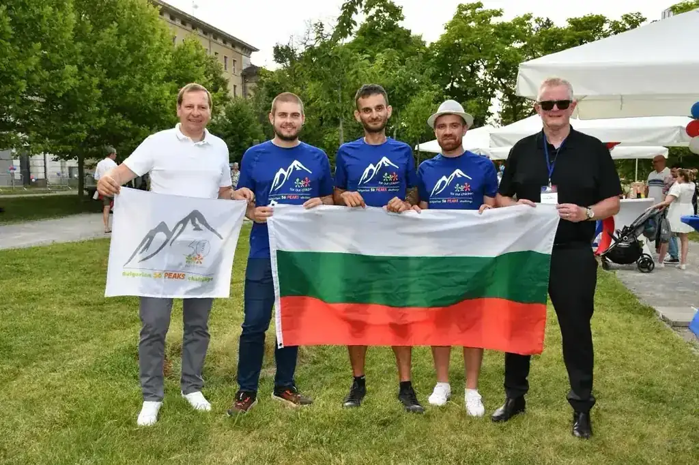

#01 Planning Range 1Summit One
Details to be confirmed · Range 1 of 3TBC
TBC
The first summit of the Bulgarian Three Peaks challenge. Route details, elevation, and logistics are being finalised. This peak will set the tone for everything that follows.